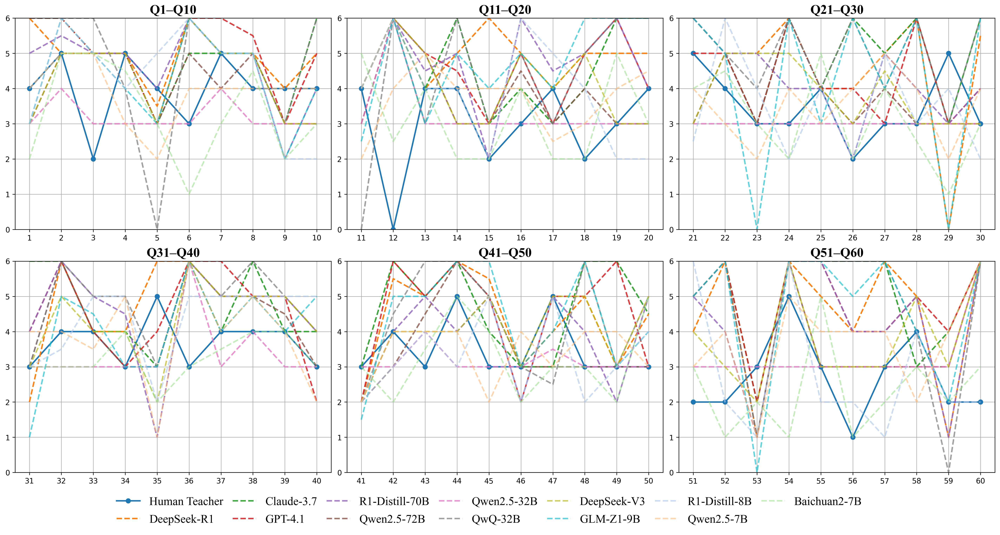
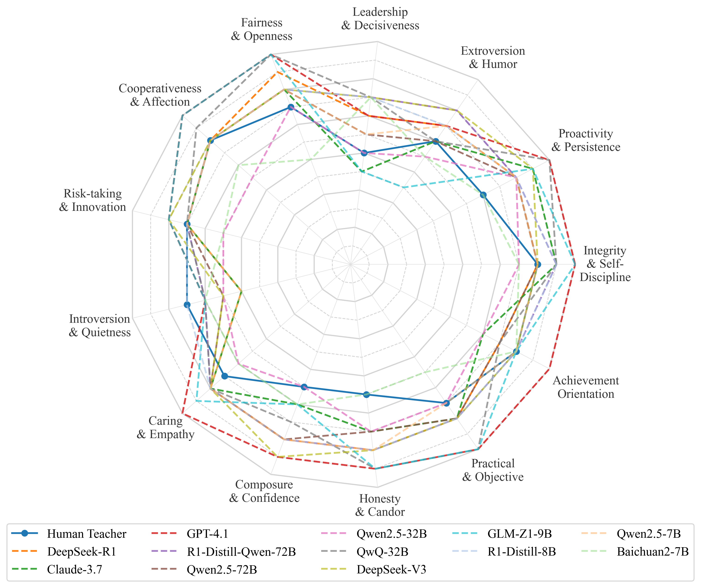
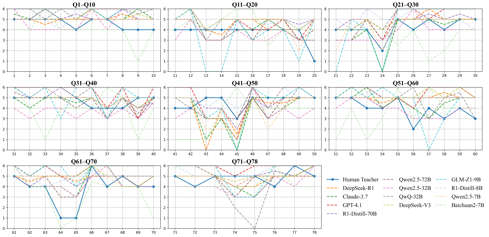

HEXACO Radar Chart comparing personality traits of teacher LLMs and real teachers at temperature=0. The visualization shows how model-generated teacher personalities differ from those of in-service teachers across six major personality dimensions.
HEXACO Radar Chart showing personality trait comparison at temperature=0.25. This visualization demonstrates how sampling temperature affects the personality profile generated by teacher LLMs compared to real teachers.

HEXACO Radar Chart at temperature=0.5, illustrating mid-range temperature effects on teacher LLM personality trait expression compared to real teacher averages across the six HEXACO dimensions.

HEXACO Radar Chart at temperature=0.75, showing how increased randomness in sampling affects the personality trait distribution of teacher LLMs compared to the more balanced profile of real-world educators.
HEXACO Radar Chart at maximum temperature=1.0, displaying the highest variance in personality trait expression among teacher LLMs. This visualization highlights how high-temperature sampling leads to more divergent personality profiles compared to real teachers.
Item-level comparison on the HEXACO-60 inventory at temperature=0. This detailed visualization breaks down how teacher LLMs respond to individual personality assessment items compared to real teachers, showing more polarized responses from the models.

Item-level comparison on the HEXACO-60 inventory at temperature=0.25, showing how slight randomness affects responses to individual personality assessment items across different LLMs compared to in-service teachers.
Item-level comparison on the HEXACO-60 inventory at temperature=0.5, illustrating medium-temperature effects on item-specific personality trait expressions across various teacher LLMs and real teacher averages.

Item-level comparison on the HEXACO-60 inventory at temperature=0.75, showing how higher randomness influences responses to specific personality items, with increasingly varied responses from teacher LLMs.
Item-level comparison on the HEXACO-60 inventory at maximum temperature=1.0, demonstrating how high randomness in sampling produces the most diverse responses to personality items from teacher LLMs compared to the more consistent responses of real teachers.

CPST-E Radar Chart at temperature=0, comparing professional teacher personality traits between LLMs and real teachers. This visualization focuses on teaching-specific personality dimensions that influence professional practice.
CPST-E Radar Chart at temperature=0.25, showing how low-temperature sampling affects the professional personality traits of teacher LLMs compared to in-service teachers across teaching-specific dimensions.

CPST-E Radar Chart at temperature=0.5, illustrating medium-temperature effects on professional teacher personality traits across various LLMs compared to real teacher averages.

CPST-E Radar Chart at temperature=0.75, showing how increased randomness affects the professional personality profile of teacher LLMs across teaching-specific dimensions compared to real educators.

CPST-E Radar Chart at maximum temperature=1.0, displaying the highest variance in professional teacher personality traits among LLMs. This shows how high-temperature sampling impacts teaching-specific attributes compared to real teachers.

Item-level comparison on the CPST-E inventory at temperature=0. This detailed visualization breaks down how teacher LLMs respond to individual professional personality assessment items compared to real teachers.

Item-level comparison on the CPST-E inventory at temperature=0.25, showing how slight randomness affects responses to professional teaching personality items across different LLMs compared to in-service teachers.
Item-level comparison on the CPST-E inventory at temperature=0.5, illustrating medium-temperature effects on teaching-specific personality traits across various LLMs and real teacher averages.
Item-level comparison on the CPST-E inventory at temperature=0.75, showing how higher randomness influences responses to specific professional teaching personality items from LLMs.